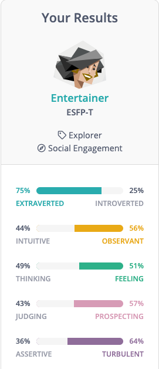
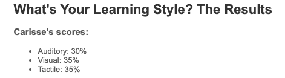
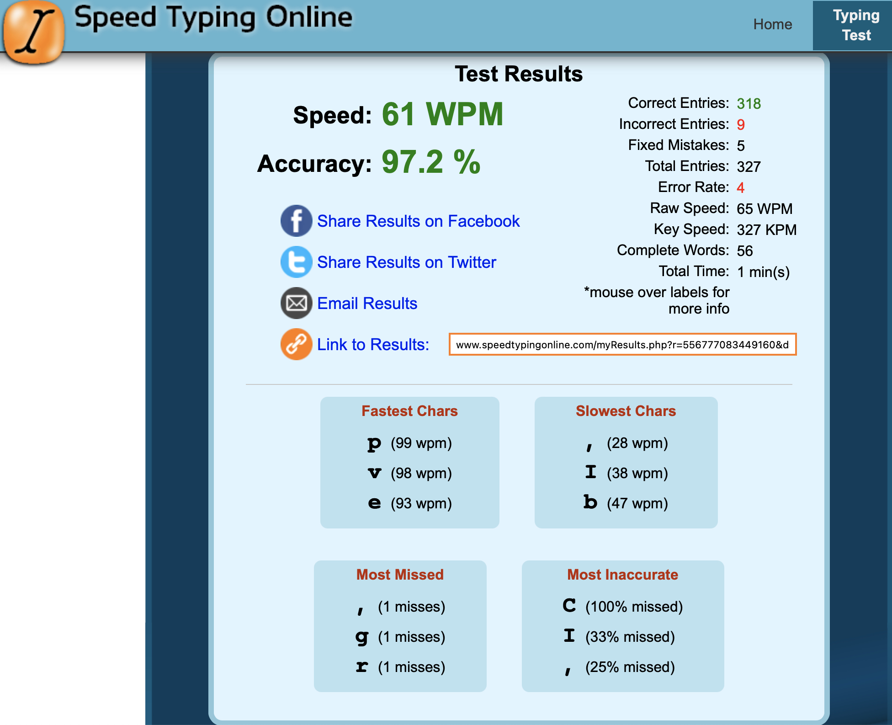

The Team - Personality Profiles
Our group, Our results
Our group is full of differing personality types which has helped to create a positive working dynamic as we have been able to quickly identify our strengths, weaknesses, and personality types within the first couple of meetings.
Many of our personality types were very logical and rational with a majority of the group wanting a positive team environment and so were prepared to get on with the job and take on tasks that benefitted the team overall.
A couple of us had stronger personality types on paper however, having strong personalities did not equate to ego clashes. If anything, it has helped to move our assignment forward as it allowed for us to throw ideas into our public sphere and have the rationale of the group dictate the path forward.
A majority of us were visual learners with a couple of being more theoretical and rational in the way the intake information. This has been great in our group dynamic as we have found many interpretations of the same information which has led to us discussing topics more in-depth to reach a consensus.
Brayden – Mediator, Visual tactile learner
As a mediator, Brayden is empathetic and more reserved as a personality. Externally he may be unassuming, quiet, or less likely to put himself out there however there will most likely be a lot of activity in the mind with creative ideas, problems, and solutions with thoughts critical about themselves and things around them.
As a visual tactile learner Brayden prefers to do the task once himself to be able to replicate it and understand the concept. If both a visual aid, as well as being able to be “hands on” with the concept or task was available, then that would yield the best result in being able to learn efficiently.
Carisse – Entertainer, Visual tactile learner
Carisse is the entertainer of the group (according to the personality test and her party picture). She is extroverted and can generally sense the feeling and vibe of those around her. She is a practical and resourceful person which makes her the perfect person to consult with. Her spontaneity and energy make it a fun and positive team environment. These attributes of hers makes her a great team player, someone who can bring people together and pull the best out of the group to achieve their goals (if the goals are clearly stated).
As Carisse is also a visual learner, her knowledge is best retained by seeing an example or being shown the goal at hand.
Daniel – Debater, Visual tactile learner
As the debater of the group, Daniel is a bold, extroverted person that can progress through differing situations to achieve goals. The ability to think creatively by deconstructing and rebuilding notions serves Daniel well in minimising stagnation on projects or tasks. Although his personality type can be a cause of headbutting, in this group everybody is logical, rational and agreeable which lends to a positive dynamic in the group that is able to move forward no matter the scenario.
As another visual learner, information that is presented in an engaging way is always going to provide Daniel with the best take-away from lessons and scenarios.
This does not necessarily mean videos and images, it can just be ways that concepts, words and sentences are emphasised in print or in discussion.
Glenn – Entrepreneur, Auditory
Glenn is an entrepreneur. What does that mean? Hes a charmer and he knows it. He can improvise when needed and focus in the now which is something many of us can lack. He has a down-to-earth attitude and is invaluable in many areas, including our own little team. Even with an easy going attitude, he will knuckle down to complete tasks and continue moving forward to get things done.
His learning style is Auditory and is the only one in our group with this learning style. This means he can take instructions and further elaborate on them, leading to an understanding of new tasks.
Within a team he falls back to being the backbone, a support for the wider group to move things forward and to ensure goals are met.
Harmony – Defender, Theorist
Harmony is a defender, well not just a defender but a turbulent defender. She is a meticulous person who will get the job done to a higher level than is required. There may be times the defender type procrastinates however this is most likely short lived. As someone that does not necessarily seek the limelight, she is a dedicated and humble person which makes her a great team player that will ensure goals are achieved without headaches. With the ability to convey her strengths and weaknesses, the team is all the better at delegating tasks to Harmony she can truly excel in.
With a theorist learning style, her thought process is methodical and logical in manner that favours objectiveness and reasoning.
Xavier – Architect, Multimodal
Xavier is almost a one-of-a-kind personality type, a highly capable, rational and quick-witted personality type, the architect. Continually analysing everything around him, Xavier is an informed and rational person that works well with defined goals. As someone that thinks a lot, he is open to new ideas if those ideas are logical.
Being critical can lead to being over critical of themselves which may mean a more reserved persona.
With a multimodal learning type, Xavier prefers information in various formats and contexts to truly absorb new information, concepts, and experiences.
Full Personality Profiles
Brayden’s Personality Profile
Myers-Briggs Personality Type:
At a surface level, INFPs seem quiet and unassuming, tending to keep to themselves, but the activity within their mind is vibrant and electric. INFPs are always in their own mind, inventing situations, and solutions, daydreaming and exploring topics. They also only make up approximately 4% of the population.
INFPs contain a deep curiosity about human nature, whether that be regarding themselves or those around them. This creates a craving to understand the innermost workings of those around them and when needed, will gladly be of assistance in any way they can.
Authenticity is exceedingly important to INFPs, so having to pretend to be something they are not is an uncomfortable task. Being able to express themselves through whatever medium presents itself, whether that be work, art, music, or literature, is something INFPs seek.
Strengths
INFPs are incredibly empathetic and in-tune with their own emotions and those of the people around them. This leads them to be very thoughtful and kind-hearted.
They are very open-minded and able to not only see one perspective when it comes to both work and regarding those around them. Tolerant and accepting, they don't judge others for their lifestyle or choices and instead will try to understand when something differs from their way of life
When an idea or concept catches the eye of an INFP, their passion allows them to deep-dive into it. They may not always be outspoken, but that doesn't diminish their strong feelings or convictions.
Weaknesses
INFPs can be quite unrealistic. Having high expectations of themselves or life can often lead to INFPs being disappointed when reality doesn't meet their own hopes and dreams. They will often look at their lives and situations through rose-tinted glasses.
They long to connect with others but can struggle because they don't always know how. This can cause them to self-isolate, especially in new environments. INFPs can be reluctant to put themselves out there and as a result can feel isolated or lonely.
Being exceedingly self-critical and having a strong belief in their own potential, INFPs desperately want to live up to it. This can cause unrealistic expectations for themselves, which can cause feelings of inadequacy or uselessness.

Learning Styles Test
I am a visual / tactile learner. This means that in order to comprehend concepts or tasks, I either need a visual aid or to do the task once myself to be able to replicate it or understand the concept. If both a visual aid, as well as being able to be “hands on” with the concept or task was available, then that would yield the best result in being able to learn efficiently.
Characteristics
The need for movement: Tactile learners often learn best when moving. Their sense of touch and ability to move around can actually help in the comprehension of concepts.
Dislikes confinement: Both physical and mental confinement can be a problem for tactile learners. Therefore, being able to get up and walk around, or being allowed to think outside the box is important to tactile learners as this provides a sense of freedom and diminishes most / any feelings of confinement.
Talking with their hands
Tactile learners will often talk with a myriad of hand gestures. This is their way of moving around and being able to process the information they’re relaying or just within regular conversation.
Requiring reference: A visual learner will sometimes have trouble being able to replicate or perform tasks that they haven’t previously seen. Having a visual guide or reference
The char above shows that kinesthetic (tactile) has the most people (87.1%) with that learning style as part of their preference, while less than half (48.8%) have visual as a part of their learning style.
The chart above also shows that visual has the lowest single and bimodal preference. This means that only 3.9% have visual learning as their single learning style. While kinesthetic has the highest single preference at 22.6%. Therefore, being a bimodal VK (Visual / Kinesthetic) means I am only part of the low percentage that has both visual and kinesthetic preferences.
The Big 5 Personality Test
Openness describes a person’s tendency to think in abstract, complex ways. Higher scorers tend to be creative, adventurous, and intellectual. They enjoy playing with ideas and discovering novel experiences. This means that for me, I am able to think outside the box, as well as being able to be creative with problem solving.
Conscientiousness describes a person’s ability to exercise self-discipline and control in order to pursue their goals. High scorers are organised and determined and are able to forego immediate gratification for the sake of long-term achievement. Low scorers are impulsive and easily sidetracked. This means that I can struggle with motivation and being able to focus solely on work or the task at hand.
Extraversion describes a person’s inclination to seek stimulation from the outside world, especially in the form of attention from others. Extraverts engage actively with others to earn friendship, admiration, power, status, excitement, and romance. Introverts, on the other hand, conserve their energy, and do not work as hard for these social rewards. This means that as an introvert, I do not experience much of a “high” from social reward or interaction and will tend to be quiet, reserved and will rarely seek attention from others.
Agreeableness refers to a person’s tendency to put others’ needs ahead of their own, and to cooperate rather than compete with others. People who are high in Agreeableness experience a great deal of empathy and tend to get pleasure out of serving and taking care of others, they are usually trusting and forgiving. Being on the higher end means that I’m not as competitive as some others would be, but instead I would rather cooperate to achieve goals or complete tasks, rather than compete for first or to find out “who is better”.
Neuroticism is in regard to a person’s tendency to experience negative emotions, such as fear, sadness, anxiety, guilt, and shame. While everyone experiences these emotions from time to time, some are more prone to them than others. I have a high neuroticism percentage, which means that I feel negative emotions more frequently and stronger than most others.

Carisse’s Personality Profile
Results of these tests
According to the 16 Personalities test, I have an Entertainer personality (ESFP-T). It describes that this personality has traits of being extroverted, sensing, feeling, and perceiving. I am also happy to find out that one of the suggested career choices is consultant. As highlighted in the 16 Personalities test description, it says that this characteristic is very practical and resourceful which I believe is what makes a good consultant.
In addition, based on my Learning Preference Test, I scored higher in both visual and tactile which means the best method for me to remember or understand things is to visualise and touch or do it.
Moreover, as stated on the Big 5 Test, I can think analytically which is also one of the crucial skills in the consulting industry as consultants need to constantly come up with ideas and solutions for their clients.

Behaviour in a team based on these results
Based on the Big 5 Test, I have a bubbly personality and I can easily get along with anyone and everyone. On that account, I will be a good team player and contribute to whatever is the project of the team. An ESFP-T is also described as spontaneous and energetic. Therefore, I will create a positive and fun environment for my teammates regardless of what we’re working on.
Furthermore, as long as I know what the goal of the team is, I will be able to drive my team towards the best results. On the other hand, an ESFP-T is said to be more emotionally sensitive, therefore I can easily gauge my teammates’ feelings and emotions better than the average individual which will help maintain team harmony.

Things to take into account when forming a team
As mentioned above, I would consider myself as an extrovert. Hence, with the personality that I have, I strongly believe that I can easily approach introverts. Since forming a group is all about relying on each other's strengths to bounce off creative ideas and allows a more vibrant atmosphere and fun to work with.
This would help them in expressing their ideas and thoughts without having a sense of withdrawal when working as a team.
Daniel’s Personality Profile
Myers-Briggs Personality Type: Debater
A Debater (ENTP) is a person with the Extraverted, Intuitive, Thinking, and Prospecting personality traits. They tend to be bold and creative, deconstructing and rebuilding ideas with great mental agility.
They pursue their goals vigorously despite any resistance they might encounter.

Learning Style Test
You're a visual learner! You prefer to use pictures, images, and spatial understanding to learn new material. You tend to remember what you see over what you hear and prefer to read/write, rather than listen to information.
Visual learners should:
- Take notes during class as writing things down helps you remember information better.
- Use flow charts, mind maps and diagrams for note taking. You should place these around the walls in your study area.
- Visualise ideas or facts as a picture before writing them down.
- Replace words with images, pictures, colour, and other visual media, where possible.
- Use visual media such as colour and images to help you learn, e.g., use colour to highlight important points/organise your notes.
- Read material before you learn it.
- Pay attention to what’s been written on the board.
- Stay away from visual distractions, e.g., TV.

Speed Typing Online
These results suggest that I am somewhat of an average touch typer. I have a high degree of accuracy in my touch typing. I used this as a test for potential employers as this should directly relate to efficiency and accuracy in implementing code, scripting and so on.

What do the results of these tests mean for you?
Looking at the results from the Myers-Briggs test, learning style test and a Speed Typing Test, I was labelled a Debater that required a visual learning style with an average typing speed and a relatively good accuracy in typing.
I agree that I have a debating type personality. It has served me well to progress through much stagnation in the workplace and has helped me to overcome obstacles in commercial activity and in my personal life.
However, there is detriment to having a debating personality and it is one that I already recognise and have been actively working to ensure I am indeed a team player and move in the direction of a team (if they’re moving in the right direction).
The learning style test also confirmed that I prefer visual learning styles. This doesn’t necessarily mean in an educational setting as I find myself writing and drawing in meetings and discussions with clients to better grasp their requirements later.
The Speed Typing test was one that was merely to show that I could push out text, html, CSS, python scripts in a very quick time frame due to my comfort levels in touch typing.
How do you think these results may influence your behaviour in a team?
I do not believe that there is any real negative impact from my current behaviour in a team setting.
I’m a very collaborative person and generally enjoy mixing thoughts and ideas with others to come up with the best solution together.
There are times when I will take a leadership role when I know I can chorale everyone and move a team forward to deliver a solution but there are also times when I can be the team player because the most important task is to deliver a positive result.
How should you take this into account when forming a team?
Sometimes we don’t get a choice in how a team is formed and what personality/ideological conflicts will arise because of this.
I will always maintain in the forefront of my mind that professionalism and deliver of result is number one.
My goal will always be to push everyone to offer their best in a group setting regardless of the role I will play.
Glenn's Personality Profile
Myers-Briggs Personality Type: Entrepreneur

Learning Style Test
personality Test
What do the results of these tests mean for you?
The three tests that I took included the Myers-Briggs, Education Planner’s Learning style and MindTools Problem Solving tests. These tests identified the way that I learn along with people. Providing a very high energy team to lead them to success along with taking a very easy- going approach to not provide a lot of stress on myself and others. I’m very set in my approach on constantly moving and completing tasks without any downtime to be able to achieve as much as I can in the allocated time that I have. According to the learning style, I am an auditory learner, meaning that I take instructions and further decrypt them to complete the understanding to perform the task that is required.
How do you think these results may influence your behaviour in a team?
These results influence my behaviour in a team as I will always be the one providing as much support to the team as I can. I’m one to always provide as much input as I can to support the team as I am one to pick things up quickly and adapt to any standard that is required. I am one to constantly come up with a solution to any issue that arises with multiple routes, which can allow for a variety of options for the team to choose and provide any input to make adjustments that make the team happy.
How should you take this into account when forming a team?
I should tread cautiously at the start and get to know the team or the people that I’ll be working with. Through there I will slowly build an understanding of people’s strengths and weaknesses to develop tasks or
roles that play to their strengths and provide their input in the sections that they’re weaker in to allow them an opportunity to build upon that weakness.
Harmony's Personality Profile
Myers-Brigs Personality Type: Indicator
Looking at the results, the only trait that has any real significant distinction is Extraverted / Introverted, and you might be able to say the same for Judging / Prospecting.
Ok, but what do these results mean?
Turbulent Defender
The website describes “defenders” as being receptive to change, reserved yet possess competent people skills, usually conservative, sensitive and analytical.
This group can be further broken down into “turbulent” and “assertive”.
Turbulent defenders have been found to procrastinate but at the same time be meticulous. They are known to get the job done and also go above and beyond what is expected. They have been found to actively anticipate problems and when something goes wrong blame themselves.
The main obstacle for this group is that they tend to downplay their achievements as they are dedicated and humble. This can make them vulnerable to being exploited by others.
ISFJ-T - these are the initials of each dominant trait I scored in.
Sentinel - is a feature that is derived from having both the Observant and Judging traits.
Constant Improvement - is a feature that is derived from having both the Introverted and Turbulent traits.

Learning Styles Quiz
The results indicate that I lean towards the Theorist style. The Pragmatist and Reflector styles have the same result and the percentage is less than a 10% difference from the Theorist style.
The quiz describes the theorist style as being one that prefers problems to be solved in a logical manner, and one that favours objectiveness and reasoning. The people grouped under this style like to assemble rational theories based on varying facts of a specific topic. They prefer to organise things in a logical manner.

Big Five Personality Test
According to the descriptions in the results given:
Factor 1 - Extroversion - my low score might indicate I am a shut-in.
Factor 2 - Emotional Stability - my very average percentile suggests that my emotional stability is “average”.
Factor 3 - Agreeableness - scoring higher and pretty average again when looking at percentile could imply I’m just as friendly and optimistic as the majority of people.
Factor 4 - Conscientiousness - the high score and higher percentile suggest that I’m above average when it comes to being careful and diligent.
Factor 5 - Intellect/Imagination - raw score looks around 50% but according to the percentile, compared to others I tend to be more traditional and conventional.
What do these results mean to me?
Some of these results and explanations I can relate to, and others I can’t, however it was an interesting exercise. Last time I took this test was back in high school and I followed the advice of the results which suggested that I go into the previous program which I ended up withdrawing out of. So, for the most part they haven’t really changed my view on how I see the world. I will say that it was interesting to see how the results differed from when I had done them previously.
If I ever need to describe myself, these results might be able to help me express what I’m trying to convey. They can also aid with giving a brief and objective idea of who I am and my “personality”.
How do these results affect working in a team?
I feel like these results will help the team get a better grasp on what each team member is really like and aid with communication, thus making it a more efficient and enjoyable team environment.
For me, it will help with conveying my strengths and weaknesses and hopefully those of the other group members. As such, each member should be able to find a task tailored for them. Personally, and from the results shown, I am quite agreeable, open to change, and I don’t mind taking a back-seat role in making decisions. I am also reliable and will get things done before the deadline. Moreover, since I prefer to do things in a logical manner, this should aid with the planning of our future project.
I know that I much prefer to get the decisions out of the way and just start working on the project. In a prior group project, 70% of the time was spent on talking about how and why we should go about the project rather than actually doing the work.
Xavier’s Personality Profile
Myer-Briggs Personality Type: Architect
It can be lonely at the top. As one of the rarest personality types – and one of the most capable – Architects (INTJs) know this all too well. Rational and quick-witted, Architects may struggle to find people who can keep up with their nonstop analysis of everything around them.
Strengths
Rational – Architects pride themselves on their minds.
Informed – Architects are devoted to forming rational, evidence-based opinions.
Independent – For these personality types, conformity is more or less synonymous with mediocrity.
Determined – Architect personalities are ambitious and goal-oriented.
Curious – Open to new ideas – as long as those ideas are rational and evidence-based, that is.
Versatile – Architects love diving into all sorts of challenges.
Weaknesses
Arrogant – Architects might be knowledgeable, but they’re not infallible.
Dismissive of Emotions – For Architects, rationality is king.
Overly Critical – Has a great deal of self-control, particularly when it comes to thoughts and feelings.
Combative – Architects hate blindly following anything without understanding why.
Romantically Clueless – Architects’ relentless rationality can lead them to be frustrated by romance.
Learning Style Test - VARK Questionnaire
VARK Score
Visual - 13
Aural - 7
Read/Write - 3
Kinesthetic - 14
My Learning Preference
Multimodal (VK) - People with this preference like: different formats, graphs, diagrams, maps, interesting layouts, space, practical exercises, experiences, examples, case studies, trial and error, things that are real.
Creativity Quiz
My results
My score: 50
Your creativity is a "work in progress." You've had some successes, so now it's time to let loose and stretch yourself. Share your ideas and perspectives with others, and ask them how they view problems. Adopt a collaborative approach to problem finding, and work actively with others to create and innovate. The tools and resources below will help you get to the next level of creativity.
What do the results of these tests mean for you?
For me, how relevant the results are is proportional to the reliability and accuracy of the tests themselves. I find that the personality test from 16 Personalities is both reliable and accurate, so to me, it is meaningful. I can learn to be more aware of the way I act, and the way I do things, and be able to work on myself more actively. As for the VARK questionnaire, I find that the results are not as meaningful, not because of the test’s credibility itself, but because of a certain video that I recall watching from Veritasium. Finally, for the creativity test, I don’t feel that it’s that meaningful to me personally, but it does give me a general idea of my level of creativity.
How do you think these results may influence your behaviour in a team?
From the results, I can get a better Idea of both my strengths and weaknesses, and that can allow me to both optimise teamwork by utilising my strengths, as well as work on my weaknesses. Additionally, knowing the results of other members in my team can also change my behaviour towards them, as I would have a general idea of what their personalities are like. This can benefit teamwork in those social conflicts, such as misunderstandings, can be more easily avoided.
How should you take this into account when forming a team?
When forming a team, I think that a good mix of personalities would be good in developing social skills, but also has a slight risk in bad communication. But for a risk like that, I think that the trade-off is beneficial, especially because a mix of personalities can also bring a wider variety of ideas to the table.